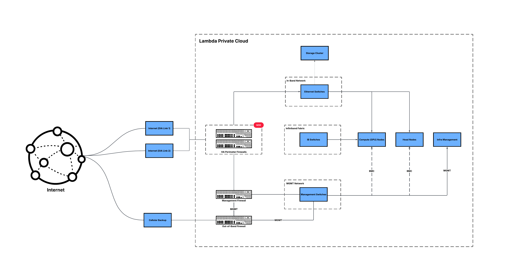
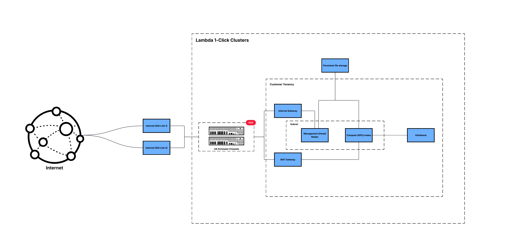

Lambda Topology
Reference topologies for Lambda Private Cloud and 1-Click Clusters, showing where perimeter, management, and out-of-band firewalls sit relative to the compute, storage, and InfiniBand fabrics.
Lambda Private Cloud
Download PDF ↓
Click the diagram to open the full PDF and zoom in.
- Perimeter: two dedicated internet access (DIA) links terminate on an HA pair of perimeter firewalls, which feed the in-band Ethernet network.
- Fabrics: the Ethernet switches connect compute, head nodes, and the storage cluster. A separate InfiniBand fabric links the GPU nodes.
- Management: a management firewall fronts the management switches (BMC and infrastructure management). An out-of-band firewall on cellular backup provides a separate path in.
Lambda 1-Click Clusters
Download PDF ↓
Click the diagram to open the full PDF and zoom in.
- Perimeter: two DIA links terminate on an HA pair of perimeter firewalls in front of the customer tenancies.
- Customer tenancy: an internet gateway and a NAT gateway serve a subnet that holds the management (head) nodes and compute (GPU) nodes, with persistent file storage attached.
- Fabric: the GPU nodes connect over InfiniBand.